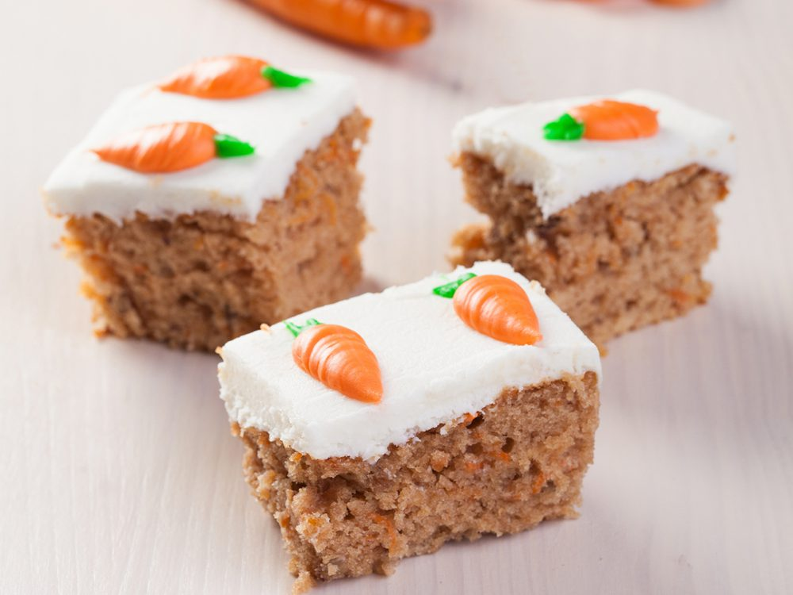
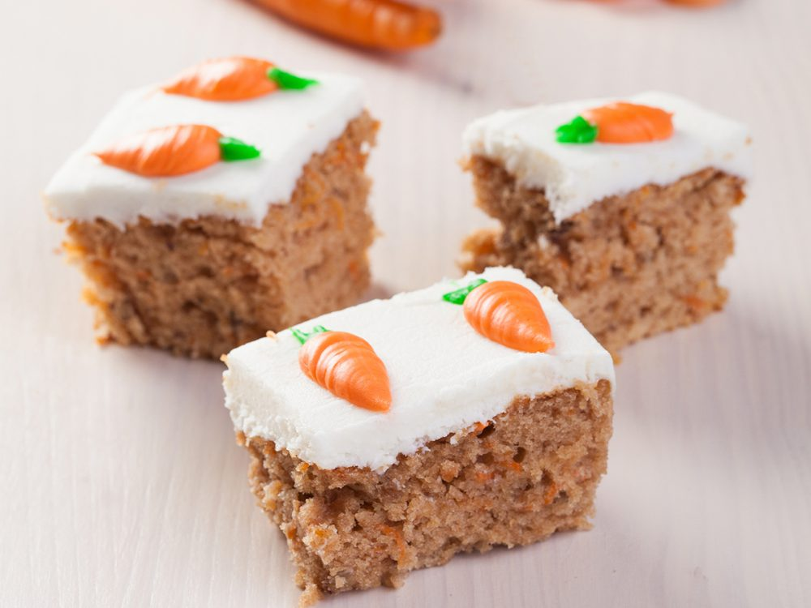

Recepten
Carrot cake
Deze cake wordt bereid met geraspte wortels, en heeft een heerlijke smaak
Tiramisu
Dit heerlijke dessert combineert lagen van luchtige mascarponekaas, koffie en cacaopoeder. Het krijgt een heerlijk zachte sponzige structuur

Of je nu een doorgewinterde chef-kok bent of gewoon op zoek bent naar nieuwe recepten om uit te proberen, hier vind je inspiratie, tips en heerlijke creaties die je smaakpapillen zullen verwennen. Onze missie is simpel: we willen je helpen om de keuken te veroveren, nieuwe smaken te ontdekken en je liefde voor lekker eten delen
Deze cake wordt bereid met geraspte wortels, en heeft een heerlijke smaak
Dit heerlijke dessert combineert lagen van luchtige mascarponekaas, koffie en cacaopoeder. Het krijgt een heerlijk zachte sponzige structuur